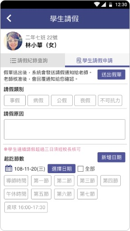

<div class="APP_application_list_class">
  <div class="APP_application_list_title">
    <span class="APP_application_list_title_left">
      <h4>請假排代</h4>  
    </span>
    <span class="APP_application_list_title_right">
      <span class="APP_list_user APP_user_orange">
        學生
      </span>
      <span class="APP_list_user APP_user_green">
        老師
      </span>
      <span class="APP_list_user APP_user_red">
        家長
      </span>
    </span>
    <div class="clear"></div>
  </div>

  <div class="APP_application_list_words">
    左側頁面，一覽請假紀錄，整理好日期以及所有未通過已通過申請。右側頁面，點開即可申請假單，送出後即可在左側頁面看到紀錄。
  </div>

  <div class="APP_application_list_pic">
    <span class="APP_list_pic_margin">
      
    </span>
    <span>
      
    </span>
  </div>
</div>
